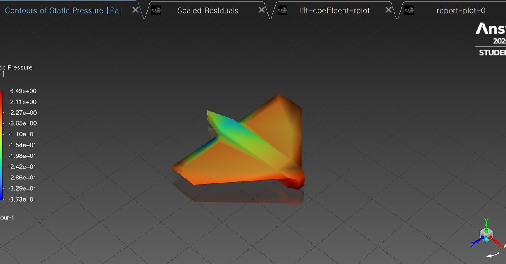
2026년 한밭대 1조 캡스톤
플랫팩 골판지 델타익 드론
PROJECT OVERVIEW
과제 목적 · 내용 · 기대효과
2026 CAPSTONE DESIGN
한밭대학교 1조
01
과제 목적
국방 분야에서 정찰 및 무인 자폭 드론의 활용이 확대됨에 따라, 기존 고정익 드론의 큰 부피로 인한 보관·운송의 한계를 극복하고 일회성 임무에 따른 제작 단가 절감이 필수적임.
- 이를 해결하기 위해 저비용 골판지 소재와 델타익 형상을 채택하고, 평면 보관 후 유사시 현장에서 즉시 조립·운용할 수 있는 플랫팩(Flat-pack) 구조와 탈부착식 구동 모듈을 적용한 드론을 개발함.
02
과제 내용
- Autodesk Inventor를 활용해 기체 중량과 탑재 하중을 고려한 2D 전개도·3D 모델링을 수행하고, 골판지 적층 구조와 탈부착식 구동 모듈의 결합 방식을 설계함.
- ANSYS Fluent로 탑재 500 g · 10 m/s 조건에서 받음각에 따른 양력과 유동을 해석해, 500 g을 지지하는 최적 익면적과 형상을 도출함.
- GPS·센서 기반 자동 제어 시스템을 구축하고, 반복 시험비행으로 무게중심과 형상을 보완해 약 8분 30초의 체공 성능을 확보함. (자율비행은 11호기까지 부분 성공)
03
활용 방안 및 기대효과
- 플랫팩(Flat-pack) 구조로 기존 드론 대비 동일 공간 내 보관·운송 효율을 3~7배(적층 확장 시 수십 배)로 높이고, 현장에서 간편하게 조립해 신속한 전술 운용이 가능함.
- 저비용 골판지 프레임과 최소한의 필수 센서를 채택해 일회성 타격 임무 시 기체 손실 부담을 완화할 수 있음.
- GPS 기반 자율비행 시스템으로 약 7 km의 작전 반경을 확보해, 접근이 어려운 지역의 정찰 및 타격 등 다양한 임무 수행이 기대됨.
낮은 단가 · 접는 부피 · 현장 조립 — 세 조건을 한 기체에서 동시에 만족시키는 것이 이 과제의 목표였습니다
STORAGE COMPARISON · LIVE 3D MODEL
보관 방식의 차이 : 조립체 적재 vs 플랫팩 적재
같은 격납고, 같은 트럭에 '무엇을 싣는가'만 바꿨습니다. 회색 격납고(A)는 완성 기체를 그대로 세워 두는 기존 방식, 주황 격납고(B)는 전개도 상태로 겹쳐 쌓는 플랫팩 방식입니다.
- 비교 기준
- 동일 바닥면 · 1 m 적재
- 팔레트 1개
- 143기
- 격납고 적재
- 약 12배
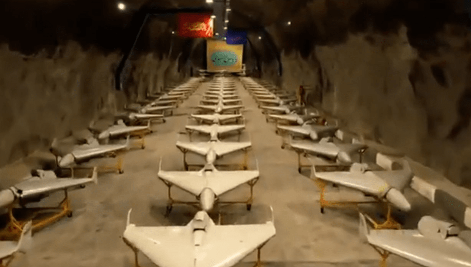
3D 모델은 화면 버전에서 회전·확대기존 · 조립체
12대
격납고 1동 · 랙 12면
플랫팩 · 전개 시트
143기
팔레트 1개 · 286장
- 적재 계산골판지 2장(3T + 3T = 6 mm)이 기체 1기입니다. 팔레트 1 m까지 쌓으면 286장 = 143기. 조립체는 날개 폭(약 0.98 m)과 높이가 부피를 정하지만, 전개 시트는 판 두께만 남습니다.
- 트럭 적재5톤 트럭 1대에 완성 기체 12대, 또는 플랫팩 팔레트 2단(286기)을 전장품 박스와 함께 실을 수 있습니다.
- 운용 효과전장 모듈(FC 54 g · 모터 85 g · 배터리 274 g, 합 0.53 kg)도 작아 팔레트 옆 박스에 함께 실립니다. 동체와 전장을 분리해 적재한 뒤 현장에서 조립합니다.
위 수치는 3T 골판지(2장 = 6 mm)를 팔레트 1 m 높이까지 쌓는 계산값이고, 3D 모델은 격납고·트럭에 한 단씩만 배치한 보수적 조건입니다. 화면을 클릭한 뒤에도 ←/→ 키로 장을 넘길 수 있습니다.
COST STRUCTURE · MATERIAL COST (BOM)
재료비 : 완제품 가격의 0.8%
미국 스위치블레이드 300의 FY2023 미 육군 예산상 flyaway 단가는 52,914달러(약 7,400만 원)입니다. 이 기체의 부품 재료비는 593,840원으로, 완제품 가격의 약 0.5~0.8%입니다. 성능이 같다는 뜻이 아니라, 같은 임무를 같은 돈으로 몇 번까지 준비할 수 있는가의 비교입니다.
- 재료비 비중
- 0.8%
- 1세트 재료비
- 59만 원
- 개발비
- 별도
미국 스위치블레이드 300FY2023 미 육군 예산 · flyaway 74,079,600원
이 기체 · 골판지 델타익 1.5 kg부품 재료비 합계 593,840원
완제품 가격 대비 부품 재료비 0.8% 인건비·개발비·인증·마진은 별도입니다
금액 산정 기준 · 스위치블레이드 300 = FY2023 미 육군 예산 flyaway $52,914 × 1,400원/$ = 74,079,600원. 재료비 비중 = 593,840 ÷ 74,079,600 = 0.80%. (출처: US Army FY2023 예산 · USAspending)
개발비 포함 추정 $80,000 기준 0.53%입니다. 개발비는 LMAMS IDIQ 상한 $39,267,040(2011)으로 별도, 인건비는 cost-plus-fixed-fee 계약으로 프로그램별 비공개입니다. 593,840원은 부품 재료비만 포함하며 조립 인건비·개발비·인증·마진·운용지원은 제외합니다.
- 기체제어기 (F405 WING)115,770
- 피토관 센서 (MS4525DO)111,700
- 텔레메트리 (SiK Radio)103,270
- 메인 모터 (AT2317)60,500
- 배터리 (LiPo 3400mAh)58,000
- 서보모터 ×2 (ES09MD)56,000
- 변속기 ESC (50A)34,000
- GPS 센서 (M10G-5883)28,000
- 프롭 · 스피너 · 배선23,100
- 크라프트 골판지 동체3,500
ARCHIVE SUMMARY
숫자로 보는 R&D 요약
누적 제작 시제기 (재활용 기체 포함)
누적 야외 실비행 테스트 (비공식 포함 100회+)
전국 캡스톤 디자인 대회 장려상
모터 파손·사출·연기 · FC 완파
자율비행 한 번을 위해, 15대의 시제기와 76번의 비행이 있었다
HALL 01 · PRE-FLIGHT ENGINEERING ( ~ 07.28)
첫 설계 : 형상과 절곡각을 정하다
삼각날개(델타익) 형상에 Undercamber 익형을 얹고, 3D 모델과 CFD 해석으로 절곡각 10°를 기준선으로 확정한 설계 단계입니다.
- 기간
- ~ 07.28
- 기체
- 사전 준비
- 확정
- 절곡각 10°
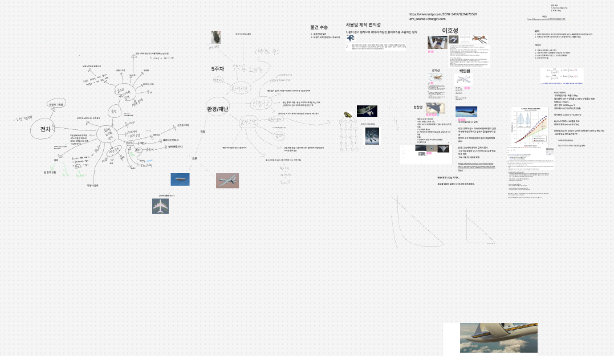
사전 준비 · 형상 확정
델타익 & 익형 선정
델타익 형상 · Undercamber 익형 조사 정리
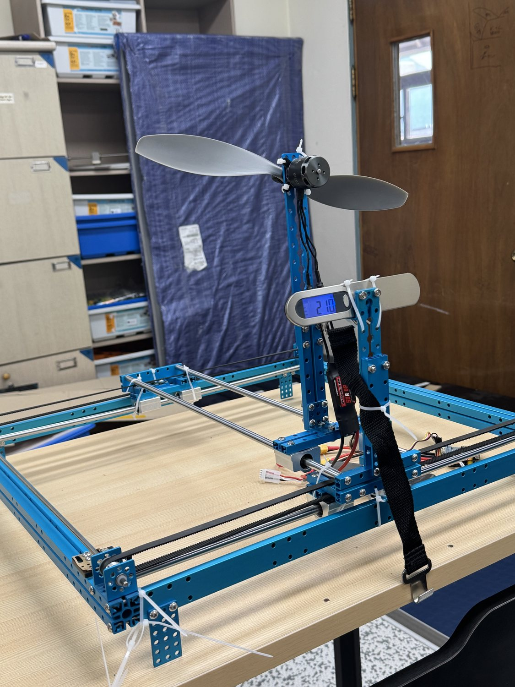
사전 준비 · 스펙 계산
크기 및 요구 추력 산출
추력 계측으로 요구 스펙·부품 선정
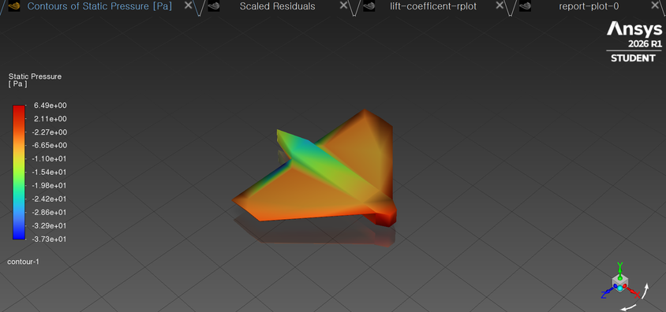
사전 준비 · 공력 해석
모델링 & 절곡각 10° 확정
초기 무게중심 및 양력 해석
HALL 02 · FIRST AIRFRAME ① (07.28 ~ 07.29)
제작과 첫 비행 : 0호기 출력에서 1호기 18회까지
도면·전장·펌웨어를 갖춰 0호기를 출력하고, 다음 날 1호기로 18회를 비행했습니다. 출력물 고정이 흔들려 절곡각이 틀어지는 문제가 첫 과제로 드러났습니다.
- 기간
- 07.28 ~ 07.29
- 기체
- 0 · 1호기
- 비행
- 18회
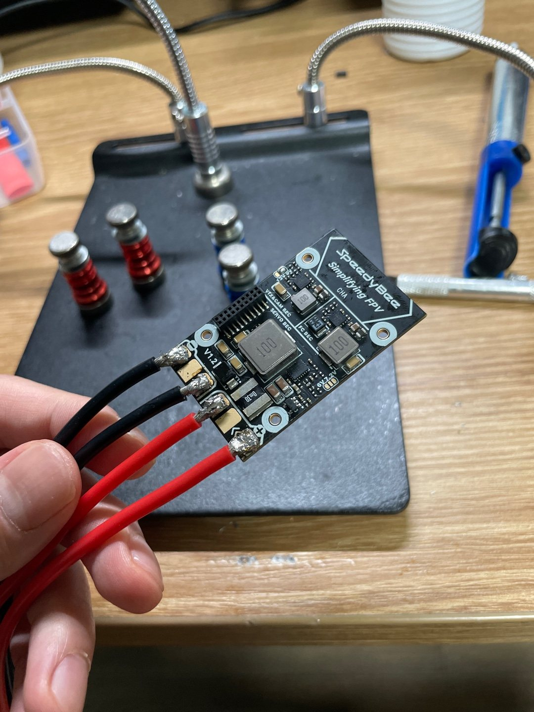
0호기 · 기체/전장 제작
플랫폼 도면 & FC 납땜
배선도 기준 FC·GPS·수신기 연결
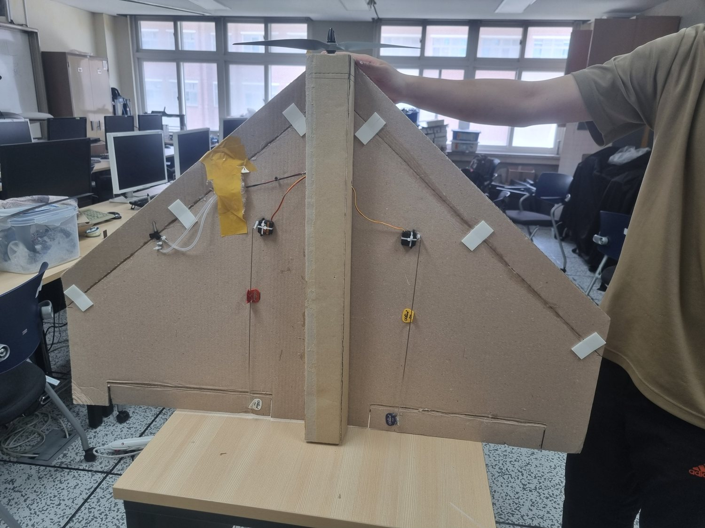
1호기 · 18회 비행
3D 프린팅 부품 확정
1호기 완성 기체 · 첫 비행 18회
HALL 02 · FIRST FLIGHTS & AWARD ② (08.19 ~ 09.09)
첫 성과 : 궤적 시연과 전국 대회 수상
출력물을 결합한 2호기로 궤적을 안정화하고, 08.29 전국 캡스톤 대회에서 장려상을 받았습니다. 3호기는 강풍 구간에서 추락하며 윙팁이라는 다음 과제를 남겼습니다.
- 기간
- 08.19 ~ 09.09
- 기체
- 2 · 3호기
- 성과
- 장려상
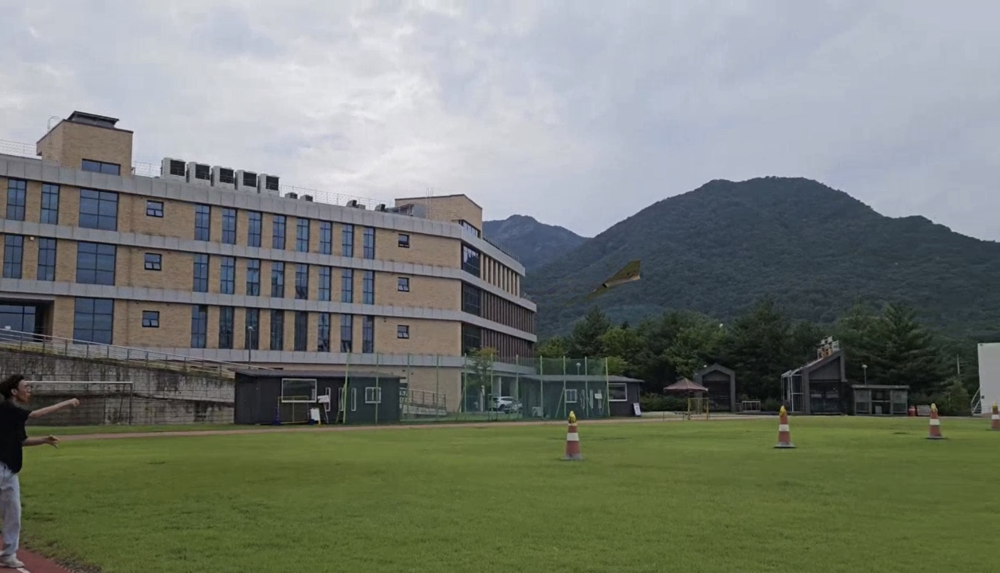
2호기 · 14회 비행
본격적 비행 궤적 시연
출력물 결합 후 비행 안정화
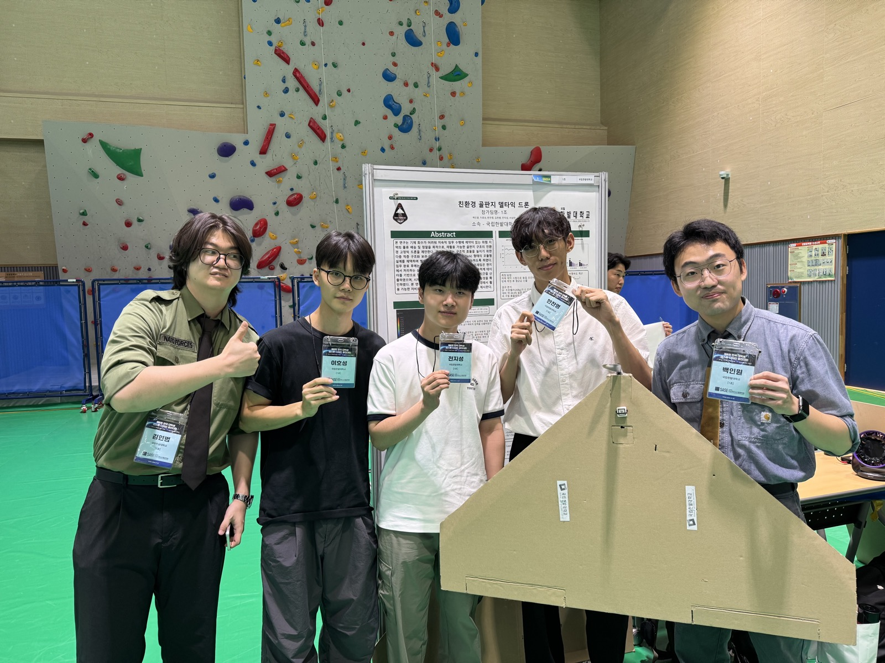
🏆 전국 캡스톤 대회
항공우주시스템공학회
제8회 대회 장려상 수상
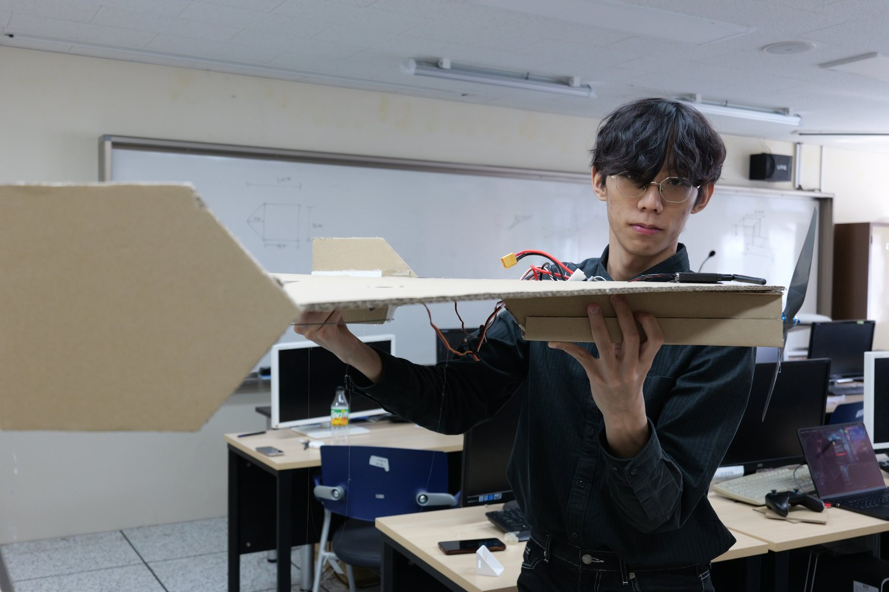
3호기 · 10회 비행
강풍 추락 및 윙팁 도입
모터·배터리 파손 / 끝단 윙 제작
HALL 03 · CRITICAL MARKER ① 09.23 (UNIT 04 CRASH)
결정적 변곡점 : 4호기 수직 추락과 무게중심 재규명
1회 비행에서 수직 급상승 후 제어를 잃고 추락해 FC 보드까지 완파됐습니다. 원인은 내부 부품만으로 계산한 CG 오류였고, 이 사고로 무게중심 산출 기준을 다시 세웠습니다.
- 일자
- 09.23
- 기체
- 4호기
- 피해
- FC 완파
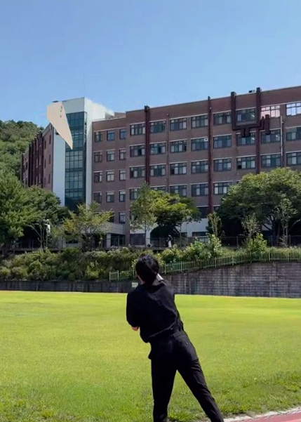
4호기 · 1회 비행 (09.23)
수직 급상승 후 제어 불능 추락
전 모델 중 최대 파손 발생 및 FC 보드 완파
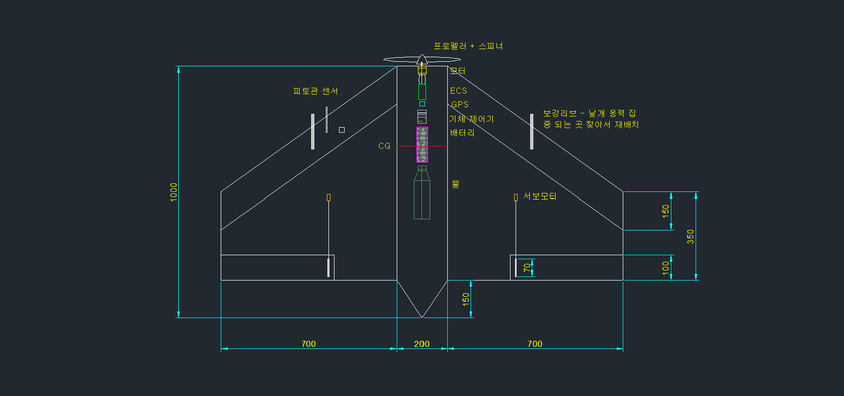
4호기 · 원인 규명
역삼각형 델타익 고유의 후방 무게중심
내부 부품만으로 CG를 계산했던 오류 발견
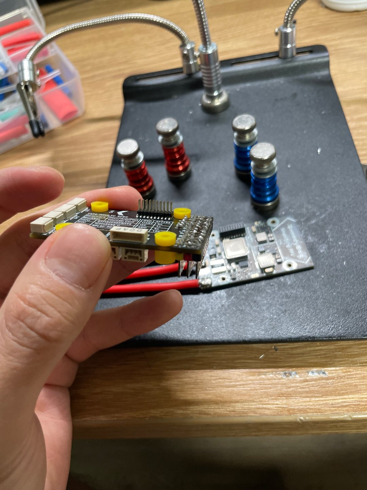
4호기 · 복구 작업
CG 재산출 & FC 재구축
핀맵 확인 ➔ 재납땜 ➔ 펌웨어·파라미터
HALL 03 · THRUST LINE & RECYCLED AIRFRAME ② (09.30 ~ 10.02)
재정비 : 추력선 2° 보정과 재활용 기체 운용
비행 중 계속 오른쪽으로 쏠리던 5호기는 전방 CG 재배치와 모터 반토크 2°로 잡았습니다. 이후 파손이 적은 동체를 재활용하는 운용으로 전환했습니다.
- 기간
- 09.30 ~ 10.02
- 기체
- 5 · 5.1 · 5.1.1
- 비행
- 18회
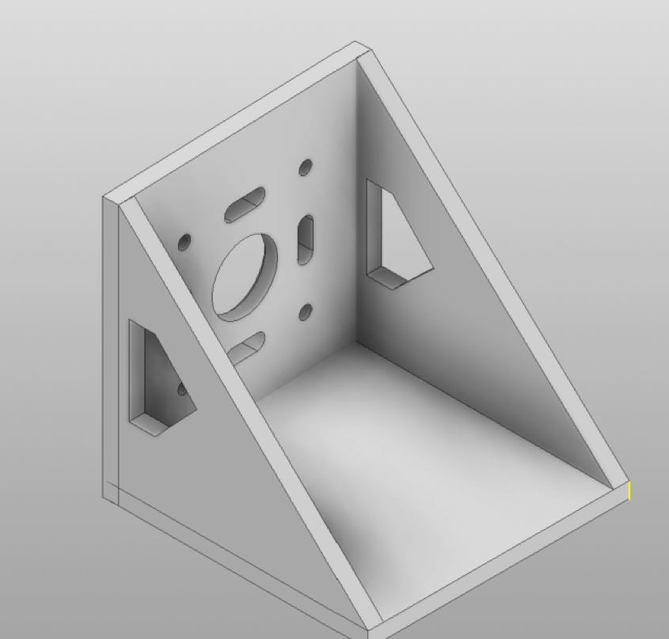
5호기 · 10회 비행
전방 CG & 모터 반토크 2° 보정
5호기 모터 프레임 개선안 적용 · 동호회 자문 반영
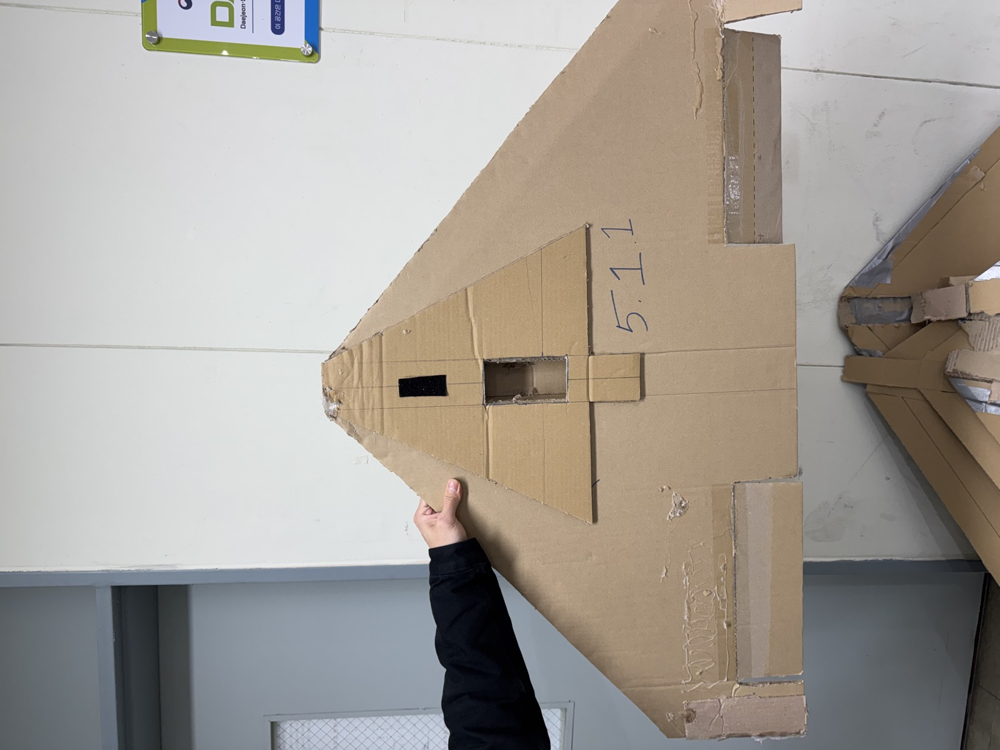
5.1호기 · 5회 비행
본격 재활용 기체 운용 시작
튼튼한 몸체 재활용 / 모터 프레임 문제 지속
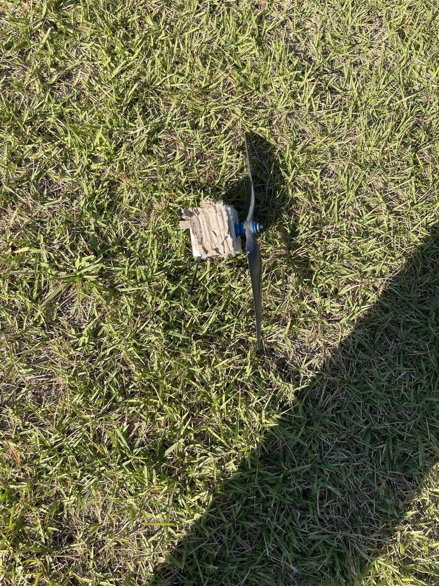
5.1.1호기 · 3회 비행
안정 비행 및 모터 사출 발생
비행 궤적 양호 / 비행 중 모터 사출 확인
HALL 04 · MOTOR FRAME & GLIDE ① (10.03 ~ 10.14)
재설계 : 모터 프레임 교체와 절곡각 제거
비행마다 반복되던 모터 사출을 막기 위해 새 모터 프레임을 제작했습니다. 6호기는 절곡각 제거로 가장 안정적인 활공을 확보했고, 7호기는 전방 CG의 한계를 확인했습니다.
- 기간
- 10.03 ~ 10.14
- 기체
- 6 · 7호기
- 결과
- 최상 활공 · CG 한계
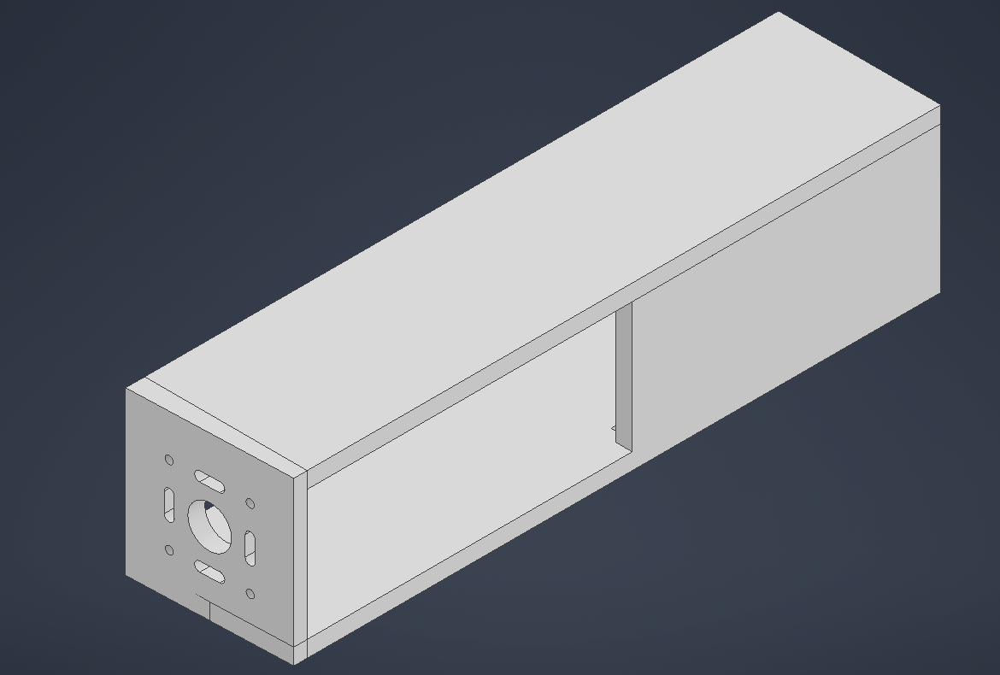
10월 03일 · 프레임 재설계
모터 사출 방지용 새 프레임 제작
모터 마운트 일체형 프레임 제작 · 사출 재발 방지
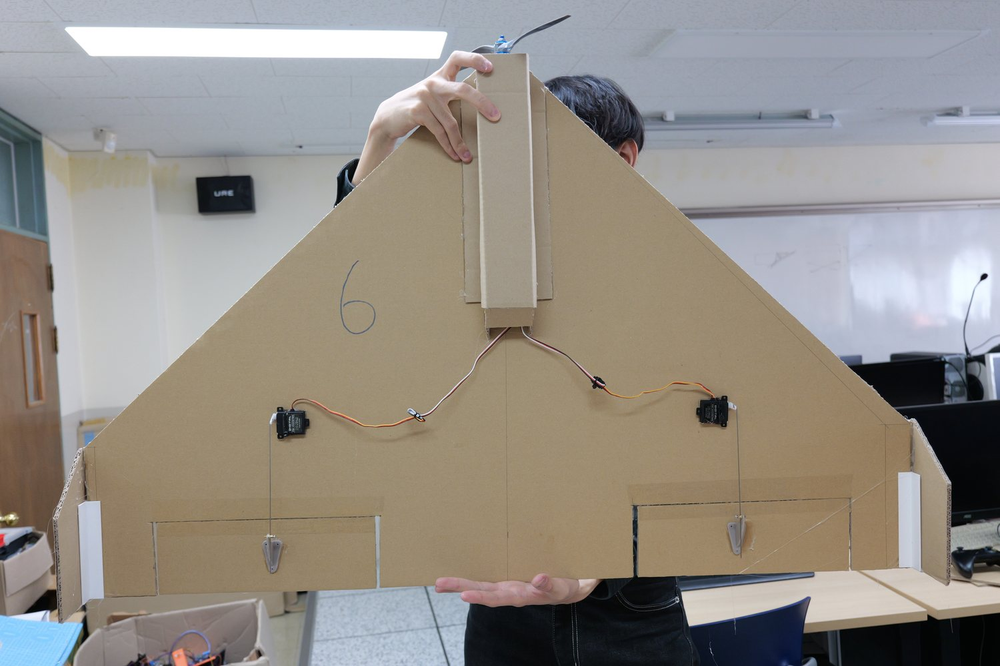
6호기 · 5회 비행
절곡각 제거 & 최상 활공
절곡각 제거 기체 · 최상 활공 기록
10월 14일 · 7호기
극단적 전방 CG 한계 확인
전방 CG 극단 이동 후 추락 · 한밭대 드론 강사님의 자문
HALL 04 · LIGHTWEIGHT TEST ② (10.14 ~ 10.21)
경량화 시도 : 소형화의 폐기와 경량 모델의 한계
소형화를 시도한 8호기는 변경점이 과도하게 누적돼 제작을 취소했습니다. 경량 9호기는 기체 회전이 계속돼 최장 거리 기록에는 이르지 못했고, 결국 대형 형상으로 복귀했습니다.
- 기간
- 10.14 ~ 10.21
- 기체
- 8 · 9호기
- 결과
- 대형 형상 복귀
8호기 · 제작 취소
소형화 설계 중 폐기
기체·프롭 변경점 과다로 취소
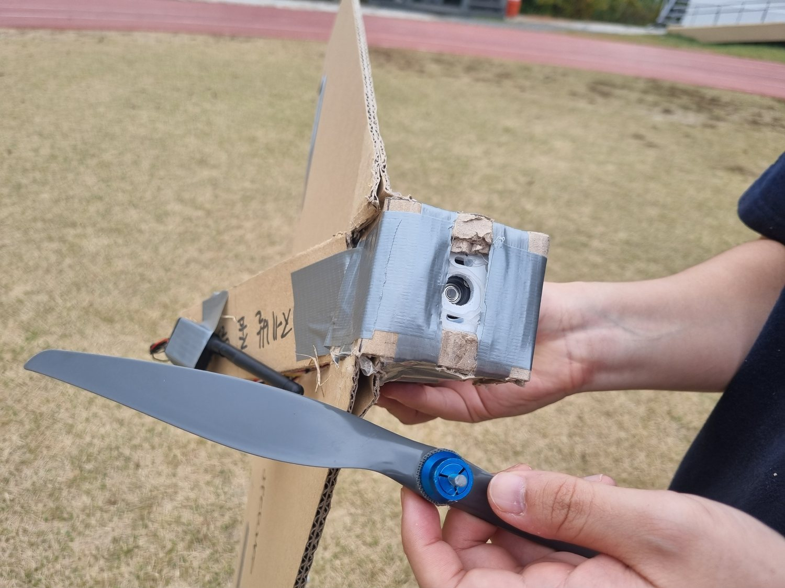
9호기 · 10회 비행
경량 모델 비행 · 기체 회전
비행 중 기체 회전 지속 ➔ 대형 형상 복귀
HALL 05 · AUTONOMOUS FLIGHT TESTS (UNIT 10 ~ 11)
자율비행 : 성공하지 못했고, 원인은 FC 제어였다
10·11호기 무인비행 4회 모두 완전한 자율비행에는 도달하지 못했습니다. 직진 수평까지는 갔지만 선회에서 무너졌고, 원인은 FC 보드의 과도한 조종면 명령으로 좁혀졌습니다. 실패 4회가 남긴 기록을 그대로 정리했습니다.
- 기체
- 10 · 11호기
- 무인비행
- 4회
- 결론
- 미완 · FC 제어
10호기 · 무인비행 3회 · 연기
직진 수평 도달, 선회에서 추락
추락 충격으로 모터 파손 · 연기로 현장 사진 없음
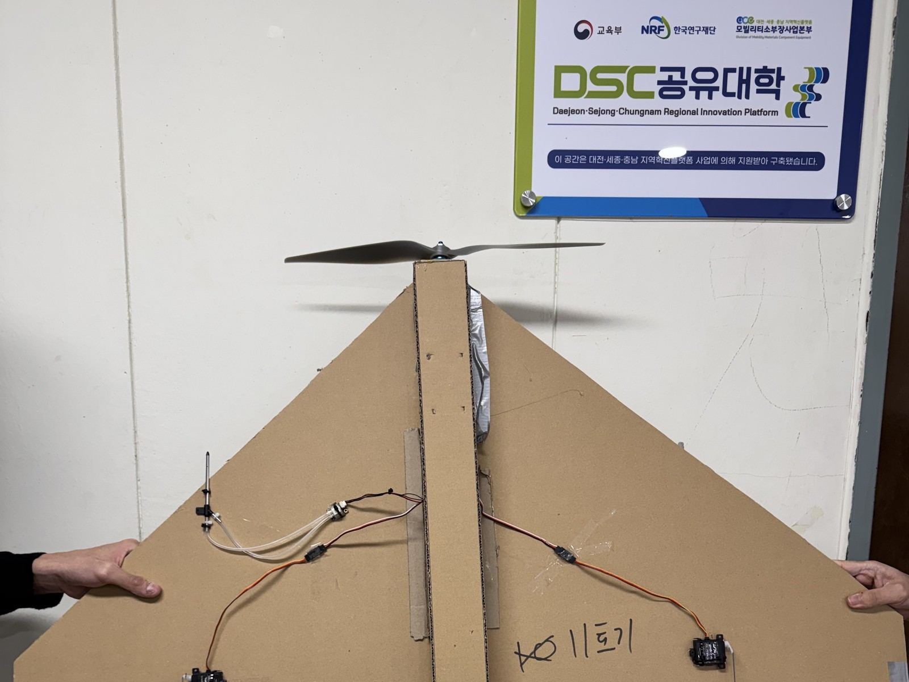
11호기 · 최종 무인비행 1회
끝내 자율비행 실패 · FC 과제어 규명
일직선 구간만 통과 / 러더 과명령으로 이탈
TECHNICAL SUMMARY MATRIX
주요 호기별 핵심 난제와 대응 일람
| 기체 구분 | 비행 일자 / 횟수 | 발생 문제 및 파손 내역 | 공학적 해결 및 설계 반영 |
|---|---|---|---|
| 1호기 ~ 2호기 | 07.29 ~ 08.19 (32회) | 부품 고정 및 절곡각 유지 필요 | 3D 프린팅 마운트 도입 및 대회 수상 |
| 3호기 ~ 4호기 | 09.09 ~ 09.23 (11회) | 수직 급상승 추락 및 FC 보드 완파 | 끝단 윙팁 제작 및 델타익 후방 CG 재산출 |
| 5호기 계열 | 09.30 ~ 10.02 (18회) | 모터 프레임 사출 및 지속 우회전 | 모터 반토크 2° 장착 및 재활용 동체 운용 |
| 6호기 ~ 9호기 | 10.07 ~ 10.21 (19회) | 극단적 전방 CG 추락 및 경량기 회전 | 날개 절곡각 제거로 최적 활공 밸런스 달성 |
| 10호기 ~ 11호기 | 무인비행 테스트 (4회) | 선회 구간 추락으로 모터 파손·연기, 11호기 러더 과제어 (자율비행 미완) | 부품·배치·무게중심은 모두 재검증, FC 펌웨어 파라미터만 미수정 → 미완으로 종료 |
15 AIRFRAMES · 76 FLIGHTS · WHAT WE ACTUALLY GOT
수십 번의 추락 끝에 남은 것은
다음 비행의 근거가 아니라 수많은 경험
낮은 단가와 보관 편의성이라는 목표는 해결했습니다. 비행은 끝내 완성하지 못했고, 마지막까지 정리하지 못한 변수는 FC 펌웨어 파라미터였습니다. 그럼에도 76번의 비행과 그보다 많은 추락을 지나며, 실제로 물건 하나를 처음부터 끝까지 만들어 본 사람만 갖는 경험을 남겼습니다.